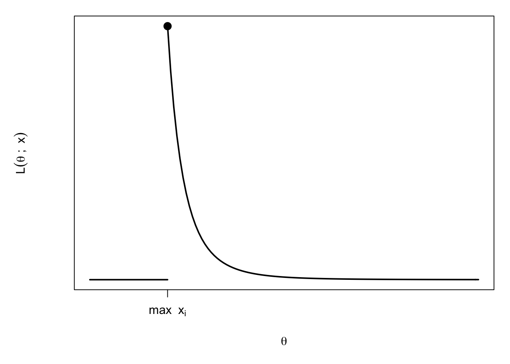

Chapter 4 Maximisation techniques
Maximum likelihood estimation comes down to a maximisation problem. Whether this is easy or difficult depends on (a) the statistical model we use in the form \(f_{\mathbf{X}}(\mathbf{x};\boldsymbol\theta)\) and (b) the parameter vector \(\boldsymbol{\theta}\). One-parameter problems are clearly easier to handle and in many cases multi-parameter problems require the use of numerical maximisation techniques.
4.1 Log-likelihood
When maximising \(L(\boldsymbol{\theta};\mathbf{x})\) it is usually easier to work with the logarithm of the likelihood instead of the likelihood itself. In this course we always work with natural logarithms. These work well when dealing with the many standard distributions whose p.d.f.s include an exponential term.
Definition 4.1 (Log likelihood)
Given a likelihood function \(L(\boldsymbol\theta;\mathbf{x})\), the
log-likelihood function is
\[
\ell (\boldsymbol{\theta};\mathbf{x})=\log
L(\boldsymbol{\theta};\mathbf{x}).
\]
You may be used to reading \(\log x\) as “log base 10 of \(x\).” In statistics, the convention is to read \(\log x\) as “log base \(e\) of \(x\).” In R, log(x) will use base \(e\).
Maximising \(\ell(\boldsymbol{\theta};\mathbf{x})\) over \(\boldsymbol{\theta}\in\Theta\) produces the same estimator \(\widehat{\boldsymbol\theta}\) as maximising \(L(\boldsymbol\theta;\mathbf{x})\), because the function \(\log(\cdot)\) is strictly increasing. However, maximising \(\ell\) is usually easier!
Using the log-likelihood is by far the most important maximisation technique. Part of the reason is that \(\log(ab)=\log(a)+\log(b)\), so in the case of i.i.d. data points, we have \[\ell(\boldsymbol\theta;\mathbf{x})=\log(L(\boldsymbol\theta;\mathbf{x}))=\log\left(\prod\limits_{i=1}^nf(x_i;\boldsymbol\theta)\right)=\sum\limits_{i=1}^n\log(f(x_i;\boldsymbol\theta)).\] Using \(\ell\) instead of \(L\) changes the \(\prod\) into a \(\sum\), and it is usually easier to work with a sum than a product.
Example 4.1 (Maximum likelihood estimation through log-likelihood: mutations in DNA.)
When organisms reproduce, the DNA (or RNA) of the offspring is a combination of the DNA of its (one, or two) parents. Additionally, the DNA of the offspring contains a small number of locations in which it differs from its parent(s). These locations are called ‘mutations.’
The number of mutations per unit length of DNA is typically modelled using a Poisson distribution1, with an unknown parameter \(\theta\in(0,\infty)\). The numbers of mutations found in disjoint sections of DNA are independent.
Using this model, find the likelihood function for the number of mutations present in a sample of \(n\) (disjoint) strands of DNA, each of which has unit length.
Solution
Let \(X_i\) be the number of mutations in the \(i^{th}\) strand of DNA. So, under our model, \[f_{X_i}(x_i;\theta)=\frac{e^{-\theta}\theta^{x_i}}{(x_i)!}\] for \(x_i\in\{0,1,2,\ldots\}\), and \(f_{X_i}(x_i)=0\) if \(x_i\notin\mathbb{N}\cup\{0\}\). Since we assume the \((X_i)\) are independent, the joint distribution of \(\mathbf{X}=(X_1,X_2,\ldots,X_n)\) has probability mass function \[\begin{align*} f_{\mathbf{X}}(\mathbf{x})&= \prod\limits_{i=1}^n\frac{e^{-\theta}\theta^{x_i}}{(x_i)!} \\ &= \frac{1}{(x_1)!(x_2)!\ldots (x_n)!}e^{-n\theta}\theta^{\sum_1^n x_i} \end{align*}\] provided all \(x_i\in\mathbb{N}\cup\{0\}\), and zero otherwise. Therefore, our likelihood function is \[L(\theta;\mathbf{x})=\frac{1}{(x_1)!(x_2)!\ldots (x_n)!}e^{-n\theta}\theta^{\sum_1^n x_i}.\] The range of possible values for \(\theta\) is \(\Theta=(0,\infty)\).
Let \(\mathbf{x}\) be a vector of data, where \(x_i\) is the number of mutations observed in a (distinct) unit length segment of DNA. Suppose that at least one of the \(x_i\) is non-zero.
Find the corresponding log-likelihood function, and hence find the maximum likelihood estimator of \(\theta\).
Solution
The log-likelihood function is \(\ell(\theta;\mathbf{x})=\log L(\theta;\mathbf{x})\), so \[\begin{align*} \log L(\theta,\mathbf{x}) &=\log\left(\frac{1}{(x_1)!(x_2)!\ldots (x_n)!}e^{-n\theta}\theta^{\sum_1^n x_i}\right)\\ &=\sum\limits_{i=1}^n(-\log (x_i)!) -n\theta + (\log \theta)\sum\limits_{i=1}^n x_i. \end{align*}\] We now look to maximise \(l(\theta;\mathbf{x})\), over \(\theta\in(0,\infty)\). Differentiating, we obtain \[\frac{d\ell}{d\theta}=-n+\frac{1}{\theta}\sum\limits_{i=1}^n x_i.\] Note that this is much simpler than what we’d get if we differentiated \(L(\theta;\mathbf{x})\). So, the only turning point of \(\ell(\theta,\mathbf{x})\) is at \(\theta=\frac{1}{n}\sum_{i=1}^nx_i\). Differentiating again, we have \[\frac{d^2\ell}{d\theta^2}=-\frac{1}{\theta^2}\sum\limits_{i=1}^nx_i.\] Since our \(x_i\) are counting the occurrences of mutations, \(x_i\geq 0\), and since at least one is non-zero we have \(\frac{d^2l}{d\theta^2}<0\) (for all \(\theta\)). Hence, our turning point is a maximum and, since it is the only maximum, is also the global maximum. Therefore, the maximum likelihood estimator of \(\theta\) is \[\hat\theta=\frac{1}{n}\sum\limits_{i=1}^nx_i.\]
Mutations rates were measured, for 11 HIV patients, and there were found to be \[\begin{align*} &\mathbf{x}=\Big\{19,\, 16,\, 37,\, 28,\, 24,\, 34,\, 37,\, 126,\, 32,\, 48,\, 45\Big\} \end{align*}\] mutations per \(10^4\) possible locations (i.e.~`per unit length’). This data comes from the article Cuevas et al. (2015)2.
Assuming the model suggested above, calculate the maximum likelihood estimator of the mutation rate of HIV.
Solution
The data has \[\bar{x}=\frac{1}{11}\sum\limits_{i=1}^{11}x_i=\frac{446}{11}\approx 41\] so we conclude that the maximum likelihood estimator of the mutation rate \(\theta\), given this data, is \(\hat\theta=\frac{446}{11}.\)
4.2 Discrete parameters
When we maximise \(L(\boldsymbol{\theta};\mathbf{x})\) (or \(\ell(\boldsymbol\theta;\mathbf{x})\)), we need to be careful to keep \(\boldsymbol\theta\) within the parameter set \(\Theta\). In most of the examples we will meet in this module \(\boldsymbol{\theta}\) will be continuous and so we can use differentiation to obtain the maximum. However, in some cases, such as the next example, the possible values of \(\boldsymbol{\theta}\) may be discrete (i.e. \(\Theta\) is a discrete set) and in such cases we cannot use differentiation. Instead, we just check each value of \(\boldsymbol\theta\) in turn and find out which \(\boldsymbol\theta\) gives the biggest \(L(\boldsymbol\theta;\mathbf{x})\).
Example 4.2 (Maximum likelihood estimation for discrete parameters: mass spectroscopy.)
Using a mass spectrometer, it is possible to measure the mass3 of individual molecules. For example, it is possible to measure the masses of individual amino acid molecules.
A sample of \(15\) amino acid molecules, which are all known to be of the same type (and therefore, the same mass), were reported to have masses \[\begin{align*} &\mathbf{x}=\{ 65.76,\, 140.40,\, 94.02,\, 32.23,\, 115.00,\, 4.77,\, 116.00,\, 86.41,\, \\ & 91.14,\, 66.27,\, 91.00,\, 144.7.\, 39.33,\, 58.90 \}. \end{align*}\] It is known that these molecules are either Alanine, which has mass \(71.0\), or Leucine, which has mass \(113.1\). Given a molecule of mass \(\theta\), the spectrometer is known to report its mass as \(X\sim N(\theta,35^2)\), independently for each molecule.
Using this model, and the data above, find the likelihoods of Alanine and Leucine. Specify which of these has the greatest the likelihood.
Solution
Our model, for the reported mass \(X\) of a single molecule with (real) weight \(\theta\), is \(X\sim N(0,35^2)\). Therefore, \(X_i\sim N(\theta,35^2)\) and the p.d.f. of a single data point is \[f_{X_i}(x_i)=\frac{1}{\sqrt{2\pi}35}\exp\left(-\frac{(x_i-\theta)^2}{2\times 35^2}\right).\] Therefore, the p.d.f. of the reported masses \(\mathbf{X}=(X_1,\ldots,X_n)\) of \(n\) molecules is \[f_{\mathbf{X}}(x)=\prod\limits_{i=1}^n f_{X_i}(x_i)=\frac{1}{(2\pi)^{n/2}35^n}\exp\left(-\frac{1}{2450}\sum\limits_{i=1}^n(x_i-\theta)^2\right).\] We know that, in reality, \(\theta\) must be one of only two different values; 71.0 (for Alanine) and 113.1 (for Leucine). Therefore, our likelihood function is \[L(\theta; \mathbf{x})=\frac{1}{(2\pi)^{n/2}35^n}\exp\left(-\frac{1}{2450}\sum\limits_{i=1}^n(x_i-\theta)^2\right)\] and the possible range of values for \(\theta\) is the two point set \(\Theta=\{71.0,113.1\}\). We need to find out which of these two values maximises the likelihood.
Our data \(\mathbf{x}\) contains \(n=15\) data points. A short calculation shows that \[\frac{1}{2450}\sum\limits_{i=1}^{15}(x_i-71.0)^2\approx 12.70,\hspace{3pc}\frac{1}{2450}\sum\limits_{i=1}^{15}(x_i-113.1)^2\approx 20.41.\] and, therefore, that \[L(71.0;\mathbf{x})\approx 2.19\times 10^{-34}, \hspace{3pc}L(113.1;\mathbf{x})=9.90\times 10^{-38}.\] We conclude that \(\theta=71.0\) has (much) greater likelihood than \(\theta=113.1\), so we expect that the molecules sampled are Alanine.
Note that, if we were to differentiate (as we did in other examples), we would find the maximiser \(\theta\) for \(L(\theta;\mathbf{x})\) \(\theta\in(-\infty,\infty)\), which turns out to be \(\theta=81.07\). This is not what we want here! The design of our experiment has meant that the range of possible values for \(\theta\) is restricted to the two point set \(\Theta=\{71.0,113.1\}.\)
4.3 Multi-parameter problems
For multi-parameter problems, where \(\boldsymbol{\theta}\) is a
vector, a similar procedure can be followed. Here for simplicity
we consider only the case where there are 2 parameters (so that
\(\boldsymbol{\theta}\) is a \(2\times 1\) vector) and write
\(\boldsymbol{\theta}=(\theta_1,\theta_2)\). Now we find a
stationary point
\(\widehat{\boldsymbol{\theta}}=(\widehat{\theta}_1,\widehat{\theta}_2)\)
of the log-likelihood by solving the simultaneous equations
\[\begin{equation}
\frac{\partial \ell(\boldsymbol{\theta},\mathbf{x})}{\partial
\theta_1}=0,\quad \frac{\partial
\ell(\boldsymbol{\theta},\mathbf{x})}{\partial
\theta_2}=0.\tag{4.1}
\end{equation}\]
These equations are the analogue of the one parameter case in which we solve \(\frac{df}{dx}=0\).
In two dimensions and higher, the turning points that we find may be maxima or minima, or saddle points.
To check that a turning point is a (local) maximum, we again have to consider second derivatives. First we calculate the so called Hessian matrix: \[ H=\left(\begin{array}{cc} \dfrac {\partial^2 \ell(\boldsymbol{\theta};\mathbf{x})}{\partial \theta_1^2 } & \dfrac {\partial^2 \ell(\boldsymbol{\theta};\mathbf{x})}{\partial \theta_1 \partial \theta_2 }\\ \dfrac {\partial^2 \ell(\boldsymbol{\theta};\mathbf{x})}{\partial \theta_1\partial \theta_2} & \dfrac {\partial^2 \ell(\boldsymbol{\theta};\mathbf{x})}{\partial \theta_2^2 } \end{array}\right) \] and then we evaluate \(H\) at \(\boldsymbol{\theta}=\widehat{\boldsymbol{\theta}}\), where \(\widehat{\boldsymbol{\theta}}\) is the stationary point we found using (4.1).
In the 2 variable case we can use a fact from multi-variable calculus: if \[\begin{equation} \frac{\partial^2 \ell(\boldsymbol{\theta};\mathbf{x})}{\partial \theta_1^2}\bigg{|}_{\boldsymbol\theta=\widehat{\boldsymbol\theta}}<0 \hspace{1pc}\text{ and }\hspace{1pc} \det H\;\Big{|}_{\boldsymbol\theta=\widehat{\boldsymbol\theta}}>0 \tag{4.2} \end{equation}\] then we can conclude that our turning point is a local maximum.
Example 4.3 (Multi-parameter maximum likelihood estimation (rainfall).)
Find the maximum likelihood estimator of the parameter vector \(\boldsymbol{\theta}=(\mu,\sigma^2)\) when the data \(\mathbf{x}=(x_1,x_2,\ldots,x_n)\) are modelled as i.i.d. samples from a normal distribution \(N(\mu,\sigma^2)\).
Solution
Our parameter vector is \(\boldsymbol\theta=(\mu,\sigma^2)\), so let us write \(v=\sigma^2\) to avoid confusion. As a result, we are interested in the parameters \(\boldsymbol\theta=(\mu,v)\), and the range of possible values of \(\boldsymbol\theta\) is \(\Theta=\mathbb{R}\times(0,\infty)\).
The p.d.f. of the univariate normal distribution \(N(\mu,v)\) is \[f_X(x)=\frac{1}{\sqrt{2\pi v}}e^{-(x-\mu)^2/2v}.\] Writing \(\mathbf{X}=(X_1,\ldots,X_n)\), where the \(X_i\) are i.i.d.~univariate \(N(\mu,v)\) random variables, the likelihood function of \(\mathbf{X}\) is \[L(\boldsymbol{\theta};\mathbf{x})=f_\mathbf{X}(\mathbf{x})=\frac{1}{(2\pi v)^{n/2}} \exp\left(-\frac{1}{2v}\sum_{i=1}^n(x_i-\mu)^2\right).\] Therefore, the log likelihood is \[\ell(\boldsymbol{\theta};\mathbf{x}) = -\frac{n}{2}\left(\log(2\pi)+\log(v)\right)- \frac{1}{2v}\sum_{i=1}^n(x_i-\mu)^2.\]
We now look to maximise \(\ell(\boldsymbol{\theta};\mathbf{x})\) over \(\boldsymbol\theta\in\Theta\). The partial derivatives are \[\begin{align*} \frac{\partial \ell}{\partial \mu} &= \frac{1}{v}\sum_{i=1}^n (x_i-\mu)=\frac{1}{v}\left( \sum_{i=1}^n x_i -n\mu\right) \\ \frac{\partial \ell}{\partial v} &= -\frac{n}{2v}+\frac{1}{2v^2} \sum_{i=1}^n(x_i-\mu)^2. \end{align*}\]
Solving \(\frac{\partial \ell}{\partial \mu}=0\) gives \(\mu=\frac1n\sum_{i=1}^n x_i =\bar{x}\). Solving \(\frac{\partial \ell}{\partial v}=0\) gives \(v=\frac1n\sum_{i=1}^n (x_i-\mu)^2\). So both partial derivatives will be zero if and only if \[\begin{equation} \label{eq:normal_2param_turning_point} \mu = \bar{x},\hspace{4pc} v = \frac1n\sum_{i=1}^n (x_i-\bar{x})^2. \end{equation}\] This gives us the value of \(\theta=(\mu,v)\) at the (single) turning point of \(\ell\).
Next, we use the Hessian matrix to check if this point is a local maximum. We have \[\begin{align*} \frac{\partial^2 \ell}{\partial \mu^2} &= -\frac{n}{v} \\ \frac{\partial^2 \ell}{\partial \mu\partial v} &= \frac{-1}{v^2}\left( \sum_{i=1}^n x_i -n\mu\right) \\ \frac{\partial^2 \ell}{\partial v^2} &= \frac{n}{2v^2}-\frac{1}{v^3}\sum_{i=1}^n(x_i-\mu)^2 \end{align*}\]
Evaluating these at our turning point, we get \[\begin{align*} \left.\frac{\partial^2 \ell}{\partial \mu^2}\right|_{\widehat{\boldsymbol{\theta}}} &= -\frac{n}{\hat{v}} \\ \left.\frac{ \partial^2 \ell}{\partial \mu\partial v} \right|_{\widehat{\boldsymbol{\theta}}} &= \frac{-1}{v^2} \left( \sum_{i=1}^n x_i -n\bar{x}\right)=0 \\ \left.\frac{\partial^2 \ell}{\partial v^2}\right|_{\widehat{\boldsymbol{\theta}}} &= \frac{n}{2v^2}-\frac{1}{v^3}\sum_{i=1}^n(x_i-\bar{x})^2= \frac{n}{2v^2}-\frac{1}{v^3}n\hat{v}=\frac{-n}{2v^2} \end{align*}\] so \[H=\begin{pmatrix}-\frac{n}{v} & 0 \\ 0 & \frac{-n}{2v^2}\end{pmatrix}.\] Since \(-\frac{n}{v}<0\) and \(\det H=\frac{n^2}{2v^3}>0\), our turning point is a local maximum. Since it is the only turning point, it is also the global maximum. Hence, the MLE is \[\begin{align*} \hat{\mu} &= \bar{x} \\ \hat{\sigma}^2=\hat{v} &= \frac1n\sum_{i=1}^n (x_i-\bar{x})^2. \end{align*}\]
Note \(\hat{\mu}\) is the sample mean, and \(\hat{\sigma}^2\) is the (biased) sample variance.
For the years 1985-2015, the amount of rainfall (in millimetres) recorded as falling on Sheffield in December is as follows: \[\begin{align*} &\{78.0,\, 142.3, \, 38.2, \, 36.0, \, 159.1, \, 136.0, \, 78.4, \, 67.4, \, 171.4,\\ & 103.9, \, 70.4, \, 98.2, \, 79.4,\, 57.9, \, 135.6, \, 118.0, \, 28.0, \, 129.8, \\ & 106.5, \, 46.3, \, 56.7, \, 114.0, \, 74.9, \, 52.8, \, 66.1, \, 18.8, \, 124.6,\, 136.0, \\ & 69.8, \, 102.0, \, 121.2\}. \end{align*}\] Denoting the observed rainfall in the \(i\)th year by \(x_i\), we have \[\bar{x}=\frac{1}{30}\sum\limits_{i=1}^{30}\approx 93.9,\hspace{3pc}\frac{1}{30}\sum\limits_{i=1}^{30}(x_i-\bar{x})^2\approx1631.2\approx40.4^2\]
This data comes from the historical climate data stored by the Met Office.
Meteorologists often model the long run distribution of rainfall by a normal distribution (although in some cases the Gamma distribution is used). Assuming that we choose to model the amount of rainfall in Sheffield each December by a normal distribution, find the maximum likelihood estimators for \(\mu\) and \(\sigma^2\).
Solution
The data has \(n=30\), and \[\bar{x}=\frac{1}{30}\sum\limits_{i=1}^{30}\approx 93.9,\hspace{3pc}\frac{1}{30}\sum\limits_{i=1}^{30}(x_i-\bar{x})^2\approx1631.2\approx40.4^2\] So we conclude that, according to our model, the maximum likelihood estimators are \(\hat\mu\approx 93.9\) and \(\hat{\sigma^2}\approx 40.4^2\), which means that Sheffield receives a \(N(93.9,40.4^2)\) quantity of rainfall, in millimetres, each December.
In the general multivariate case, to check that a turning point is a local maxima we should check that \(H\), when evaluated at the turning point, is a negative definite matrix. This fact is outside of the scope of our course, but we mention it here for completeness.
A negative definite \(k\times k\) matrix \(\mathbf{M}\) is a matrix for which \(\mathbf{a}^T\mathbf{M}\mathbf{a}<0\) for all non-zero vectors \(\mathbf{a}\in\mathbb{R}^k\). When \(k=2\) this is equivalent to (4.2). For example, you can easily check that \(-I\), where \(I\) is the identity matrix, is negative definite.
4.4 Using a computer
In some cases, particularly when a complex model is used, or when many parameters are unknown, it is not possible to obtain an expression for the maximum likelihood estimator \(\hat\theta\).
These cases can be approached with the aid of a computer, and , which means using a computer to try and approximate the maximum value of the likelihood function. There are a wide range of algorithms designed to maximise functions numerically, but this is outside the scope of our current course.
4.5 A warning example
Sometimes, we have to be very careful about using differentiation to maximise the likelihood function. We illustrate with an example.
Example 4.4 (Maximum likelihood estimation for the uniform distribution.)
Find the maximum likelihood estimator of the parameter \(\theta\) when the data \(\mathbf{x}=(x_1,x_2,\ldots,x_n)\) are i.i.d. samples from a uniform distribution \(U[0,\theta]\), with unknown parameter \(\theta>0\).
Solution
Here the p.d.f. of \(X_i\) is \(f(x)=\frac{1}{\theta}\) for \(0\leq x\leq \theta\) and zero otherwise. So the likelihood, for \(\theta\in \Theta=\mathbb{R}^+\), is \[\begin{align*} L(\theta;\mathbf{x}) &= \begin{cases} \frac{1}{\theta^n} & \text{if }\theta \geq x_i\text{ for all }i \\ 0 & \text{if }\theta<x_i\text{ for some }i \end{cases}\\ &= \begin{cases} \frac{1}{\theta^n} & \text{if }\theta \geq\max_{i}x_i\\ 0 & \text{if }\theta<\max_{i}x_i. \end{cases} \end{align*}\]

Differentiating the likelihood, we see that \(L(\theta;\mathbf{x})\) is decreasing (but positive) for \(\theta>\max_{i}x_i\). For \(\theta<\max_{i}x_i\) we know \(L(\theta;\mathbf{x})=0\), so by looking at the graph, we can see that the maximum occurs at \[\theta=\hat{\theta}=\max_{i=1,\ldots,n}x_i.\] This is the MLE.
The moral of the story is: if something seems strange during maximisation, draw a picture of the function you are trying to maximise.
Actually, the biological details here are rather complicated, and we omit discussion of them.↩︎
http://journals.plos.org/plosbiology/article?id=10.1371/journal.pbio.1002251↩︎
This is a simplification; in reality a mass spectrometer measures the mass to charge ratio of the molecule, but since the charges of molecule are already known, the mass can be inferred later. Atomic masses are measured in so-called ‘atomic mass units.’↩︎